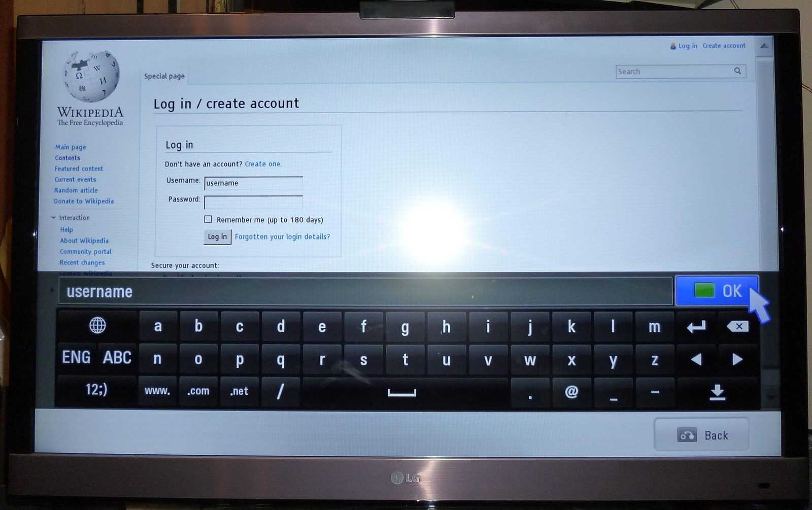
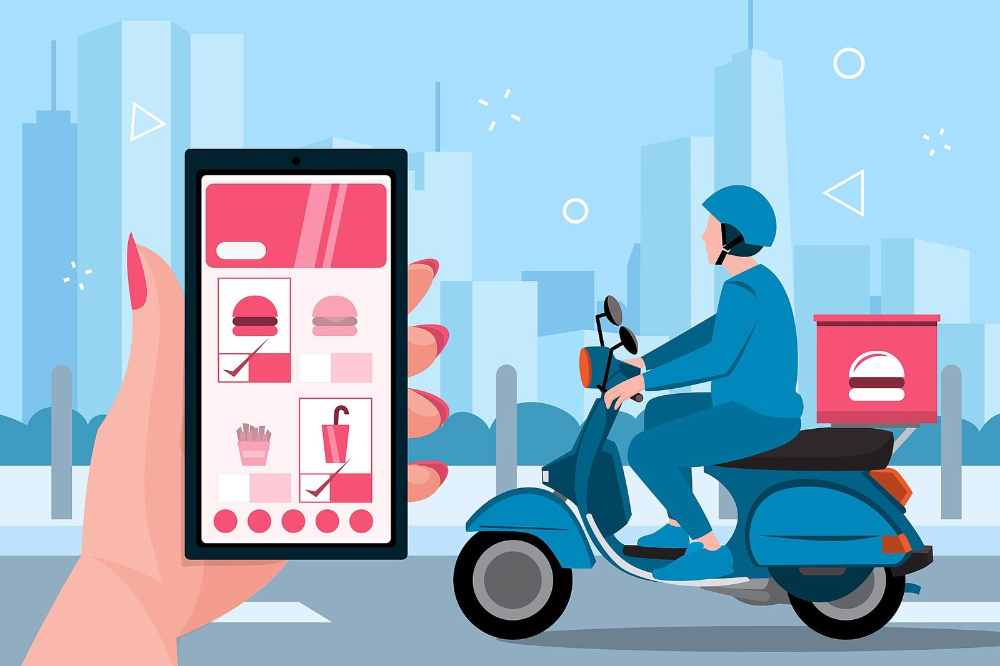
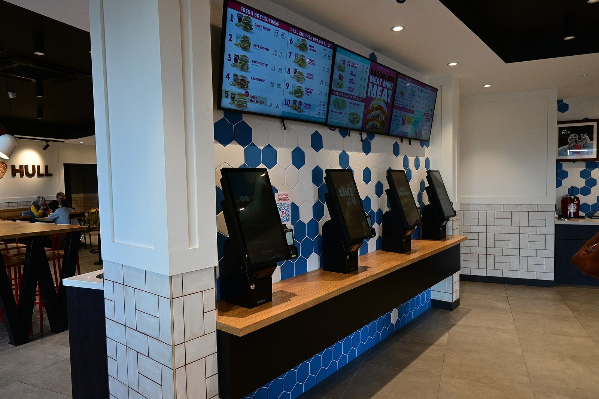

From the shop floor to the living room.
Six projects across retail, healthcare, streaming, logistics, education and hospitality.
Different sectors and different screens, built the same way each time — a fixed quote before we start, a working build every week, and every account handed over at the end.
Client names are withheld. Where a client asks, we anonymise the details further or leave a project off this page entirely. The figures below were confirmed with each client at handover and are rounded.

Retail · 6 weeks
One catalogue, three screens
- Before
- Website, POS and a spreadsheet, all disagreeing
- After
- One catalogue, live on 3 screens in under a minute
A 40-store retail chain kept its products in three places — the website, the POS and a shared spreadsheet — and all three disagreed. We rebuilt the catalogue as a single source and pushed it to the website, an Android app for floor staff and the in-store kiosks. A price or stock change is now made once and reaches every screen within a minute, so nobody quotes last week's price at the counter.
3
screens, one catalogue
40
stores live

Healthcare · 5 weeks
Bookings that stopped double-booking
- Before
- Paper diary shared between 3 receptionists
- After
- Role-based CRM with WhatsApp reminders
Six clinics shared a paper diary and three receptionists who phoned each other to check whether a slot was free. We built a booking CRM with a calendar per clinic, role-based access for doctors and reception, and WhatsApp reminders that go out the evening before. Reception now sees every chair in the group on one screen, and the monthly report the owners used to assemble by hand writes itself.
6
clinics on one system
0
double bookings since launch
Streaming · 9 weeks
One player, every living room
- Before
- Phone-only, no presence on the television
- After
- Apple TV, Android TV and webOS from one player core
A regional streaming service could only be watched on a phone, while most of its audience wanted it on the television. We shipped apps for Apple TV, Android TV and LG webOS from a shared player core, designed for a remote rather than a thumb — five-way navigation, large focus states, and resume-where-you-left-off carried across devices. All three store submissions were approved on the first round.
3
TV platforms live
1
shared player core

Logistics · 7 weeks
The delivery run, off paper
- Before
- Dispatch by phone, status unknown until arrival
- After
- Driver app with live status on one dashboard
A logistics operator ran its day on printed manifests and phone calls to drivers. We built an Android app for the drivers — job list, navigation handoff, photo proof of delivery, and a queue that keeps working through dead patches with no signal — plus a dispatcher dashboard showing every vehicle and its status live. Proof of delivery now reaches the office the moment a driver taps done, not the next morning.
120
drivers using it daily
18
vehicles tracked live

Education · 6 weeks
Admissions, from enquiry to enrolled
- Before
- Enquiries split across a site, WhatsApp and 4 notebooks
- After
- One tagged pipeline with callbacks due
An education institute was losing applicants between a static website, a WhatsApp number and four counsellors' notebooks. We built the admissions site and the CRM behind it as one system, so every enquiry arrives in a pipeline already tagged with the course, where it came from and when the next callback is due. Counsellors open one list in the morning instead of comparing three, and the office can see which courses are actually filling.
1,800
applications in one intake
4
courses on one pipeline
Hospitality · 4 weeks
Ordering direct, and found on Maps
- Before
- Three listings, two numbers, aggregator commission
- After
- One profile, direct ordering, one number
A five-outlet restaurant group paid a commission on every order it took, and two of its Google listings still pointed at an address it had moved out of. We built direct online ordering on the group's own site, wired to the kitchen screens and to UPI payments, then rebuilt all five Business Profiles with correct hours, menus and photos. A menu change is now one edit that reaches the site and the listings together.
5
outlets on one menu
20 min
from edit to live everywhere

A small studio, shipping steadily.
We take on a handful of projects at a time so each one gets the same team from scope to launch. These are the numbers across everything we have shipped so far.
12
projects shipped, launched and handed over
7
platforms covered — web, iOS, Android, tvOS, Android TV, webOS and desktop
4–6 wks
from signed scope to launch on a typical project
100%
of code, hosting and accounts handed to the client at the end
What it is like on your side.
Every project on this page ran the same way, whether it was a four-week menu system or a nine-week TV build. It is a short list of habits rather than a methodology, and all of it exists so you are never guessing what you have bought.
You know the price before we start
We read the requirement, ask the handful of questions that actually move the number, and send a written scope with a fixed price and a launch date. If you later want something outside that scope, we re-quote it in writing before anyone begins. Nobody discovers the cost of a project on the invoice.
Written scope, fixed price
You see working software every week
From the first week there is a live link you can open on your own phone or television, not a status report. You click through it, send notes back on WhatsApp, and we build the next week around what you found. It means the awkward conversations happen in week two, when changing something is cheap.
Weekly live link
You keep everything at the end
The repository, the hosting, the domain, the app store accounts and the Google properties are created in your name from the start, and you get full access on handover day along with a recorded walkthrough for your team. Thirty days of fixes are included after launch. If you decide to work with someone else next year, nothing has to be rebuilt or asked for.
Code and accounts, yours
What to expect.
A typical project, in four promises and eight facts.
- One team from the first message to the launch — no handover to an account manager
- Payments tied to milestones you can see, not to a calendar
- Your idea stays yours — NDA signed before the first call if you want one
- References from past clients on request, once they have agreed to it
A typical project
- Quote turnaround
- 1–2 working days
- Price
- Fixed, in writing
- Build to launch
- 4–6 weeks
- Progress updates
- Weekly live link
- Platforms per project
- 1 to 4
- Payments
- Milestone based
- Post-launch fixes
- 30 days included
- Code and accounts
- Yours in full
Yours could be the seventh.
Tell us what the problem is — a paragraph is enough, you do not need a specification. You will have questions back the same day and a fixed quote within two working days.